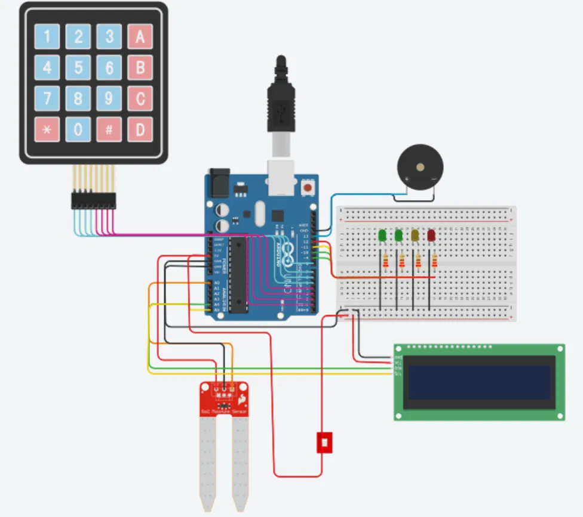
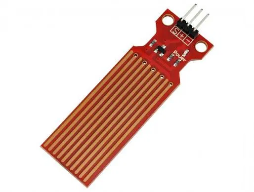

Indicador de Nível de Água com Arduino
Este projeto foi desenvolvido para a disciplina Internet das Coisas. O objetivo é monitorar o nível de água com um sensor resistivo e avisar visualmente e sonoramente quando o nível sobe.
O Arduino recebe o sinal do sensor, acende LEDs, controla o buzzer, mostra os dados em um LCD e permite mudar o limite de perigo usando um teclado.

Conteúdo
- Objetivo do projeto
- Componentes
- Ligações
- Funcionamento
- Teclas do teclado
- Como executar
- Calibração
- Simulação no Tinkercad
- Testes realizados
- Limitações
- Estrutura do projeto
- Autores
Objetivo do projeto
Criar um protótipo capaz de indicar o nível aproximado de água e avisar quando o limite configurado for atingido.
O sistema utiliza:
- LEDs para indicar as faixas de nível;
- um buzzer para emitir os alertas;
- um display LCD para mostrar a leitura;
- um teclado para controlar o buzzer e salvar o limite;
- a memória EEPROM para manter o limite após desligar o Arduino.
A leitura não representa uma medida exata em centímetros. Ela depende da calibração e das características do sensor utilizado.
Componentes
| Quantidade | Componente | Finalidade |
|---|---|---|
| 1 | Arduino Uno R3 | Controla o sensor, LEDs, buzzer, LCD e teclado |
| 1 | Sensor resistivo de nível de água | Mede o nível pela leitura analógica |
| 1 | LCD 16×2 com módulo I2C | Mostra a leitura, o percentual e o estado do buzzer |
| 1 | Teclado matricial 4×3 | Permite mudar o som e gravar o limite |
| 1 | Buzzer | Emite o alerta sonoro |
| 2 | LEDs verdes | Indicam os níveis de 25% e 50% |
| 1 | LED amarelo | Indica o nível de 75% |
| 1 | LED vermelho | Indica o limite de perigo |
| 4 | Resistores de 220 Ω | Protegem os LEDs |
| 1 | Protoboard | Montagem do circuito |
| - | Fios jumper e cabo USB | Ligações e alimentação |
Lista completa: lista de componentes da montagem física.

Ligações
| Pino do Arduino | Ligação |
|---|---|
A0 |
Sinal S do sensor de nível |
5V |
Terminal positivo + do sensor e VCC do LCD |
GND |
Terminal negativo - do sensor, GND do LCD, buzzer e LEDs |
A4 / SDA |
SDA do LCD |
A5 / SCL |
SCL do LCD |
D8, D7, D6, D5 |
Linhas do teclado 4×3 |
D4, D3, D2 |
Colunas do teclado 4×3 |
D9 |
LED verde 1, com resistor de 220 Ω |
D10 |
LED verde 2, com resistor de 220 Ω |
D11 |
LED amarelo, com resistor de 220 Ω |
D12 |
LED vermelho, com resistor de 220 Ω |
D13 |
Positivo do buzzer |
Mapa do teclado
| Linha | Teclas | Pino |
|---|---|---|
| 1 | 1 2 3 |
D8 |
| 2 | 4 5 6 |
D7 |
| 3 | 7 8 9 |
D6 |
| 4 | * 0 # |
D5 |
As três colunas correspondem, nesta ordem, aos pinos D4, D3 e D2.
Antes de ligar o teclado, confira a posição das linhas e colunas no modelo utilizado. Os terminais podem variar conforme o fabricante.
Funcionamento
O sensor envia uma leitura analógica para o pino A0. O código considera 600 como o valor máximo e converte a leitura em uma porcentagem entre 0% e 100%.
Os LEDs ficam ligados da seguinte forma:
| Leitura | LEDs ligados | Buzzer |
|---|---|---|
| 0 a 149 | Nenhum | Silencioso |
| 150 a 299 | Verde 1 | Silencioso |
| 300 a 449 | Verde 1 e verde 2 | Silencioso |
| 450 até antes do limite | Verde 1, verde 2 e amarelo | Bip lento |
| Limite ou leitura maior | Todos os LEDs | Alerta acelerado |
O limite inicial é 480, que corresponde a 80% do valor máximo considerado pelo programa.
Quando o nível atinge o limite, o LCD mostra PERIGO: 100%. Essa mensagem significa que o limite configurado foi atingido, não que o sensor esteja completamente submerso.
O que aparece no LCD
| Linha | Conteúdo |
|---|---|
| Primeira linha | Leitura bruta do sensor e estado do som: SOM ou MUDO |
| Segunda linha | Nivel: xx% ou PERIGO: 100% |
A tela é atualizada aproximadamente a cada 120 ms.
Teclas do teclado
| Tecla | Função |
|---|---|
1 |
Desliga o buzzer |
2 |
Liga o buzzer |
3 |
Salva a leitura atual como novo limite de perigo |
# |
Mostra as informações das teclas no LCD por 1 segundo |
Ao pressionar 3, o limite é salvo no endereço 0 da EEPROM. Dessa forma, o valor continua armazenado após desligar ou reiniciar o Arduino.
Na primeira inicialização, o sistema usa o limite padrão 480 caso não exista um valor válido salvo.
Como executar
Materiais necessários
- Arduino Uno;
- cabo USB;
- componentes da lista do projeto;
- Arduino IDE.
Bibliotecas
| Biblioteca | Como instalar | Uso |
|---|---|---|
Wire |
Já vem na Arduino IDE | Comunicação I2C |
EEPROM |
Já vem na Arduino IDE | Gravação do limite |
LiquidCrystal I2C |
Gerenciador de Bibliotecas | Controle do LCD |
Keypad |
Gerenciador de Bibliotecas | Leitura do teclado |
Passo a passo
- Monte o circuito seguindo a tabela de ligações.
- Abra o arquivo
codigo/Indicador_Nivel_Agua.inona Arduino IDE. - Instale as bibliotecas
LiquidCrystal I2CeKeypad, caso ainda não estejam disponíveis. - Selecione Arduino Uno em Ferramentas > Placa.
- Selecione a porta correta em Ferramentas > Porta.
- Clique em Verificar e depois em Carregar.
- Acompanhe os LEDs e as mensagens no LCD.
No código, o endereço do LCD é definido como 0x27 e os pinos do teclado seguem o mapa apresentado anteriormente.
Calibração
- Deixe o sensor seco e confirme que os LEDs estão apagados.
- Confirme que o buzzer está silencioso.
- Molhe o sensor aos poucos e observe os LEDs em 150, 300 e 450.
- Coloque o nível que deverá ser considerado perigoso.
- Pressione a tecla
3para salvar esse valor. - Reinicie o Arduino e confira se o mesmo limite continua ativo.
Se o sensor utilizado atingir uma leitura diferente de 600 quando estiver completamente molhado, ajuste esta linha no código:
const int VALOR_MAX_SENSOR = 600;
Também é possível alterar o limite inicial:
int limiteCheio = 480;
Os valores do limite entre 101 e 600 são aceitos na EEPROM. O limite padrão retorna a 480 caso o valor salvo não esteja nessa faixa.
Simulação no Tinkercad
Abra o projeto da simulação:
Diferenças entre o simulador e o projeto físico
| Item | Tinkercad | Protótipo físico |
|---|---|---|
| Sensor | Sensor de umidade do solo | Sensor resistivo de nível de água |
| Teclado | 4×4 | 4×3 |
| LCD I2C | Endereço informado como 0x20 |
Endereço usado no código: 0x27 |
| Interruptor DIP | Aparece na montagem exportada | Não é usado pelo programa |
O Tinkercad não possui exatamente todos os componentes usados na montagem real. Por isso, a exportação original foi mantida como referência da simulação, enquanto a lista física é a recomendada para montar o protótipo real.
Testes realizados
Os testes abaixo podem ser usados como roteiro de avaliação:
| Teste | Ação | Resultado esperado |
|---|---|---|
| Inicialização | Reiniciar o Arduino | LCD informa que o sistema está pronto |
| Sensor seco | Não molhar o sensor | Nenhum LED ligado e buzzer silencioso |
| 25% | Nível próximo de 150 | Verde 1 ligado |
| 50% | Nível próximo de 300 | Verde 1 e verde 2 ligados |
| 75% | Nível próximo de 450 | LEDs verdes e amarelo ligados; buzzer começa a apitar |
| Limite | Atingir o limite configurado | Todos os LEDs ligados e alerta acelerado |
Tecla 1 |
Pressionar 1 |
Buzzer silenciado |
Tecla 2 |
Pressionar 2 |
Buzzer reativado |
Tecla 3 |
Pressionar 3 |
Valor atual salvo na EEPROM |
Tecla # |
Pressionar # |
Mensagem de ajuda no LCD |
| Reinicialização | Desligar e ligar novamente | Limite configurado permanece salvo |
Limitações
- Durante as mensagens exibidas no LCD, o programa aguarda por 1 segundo e não atualiza o sensor nesse intervalo.
- Um limite inferior a
450pode acender o LED vermelho antes de o alerta sonoro começar. - Valores entre
101e599são recomendados para o limite. - O limite
600pode causar problema no cálculo da velocidade do alerta crítico. - O texto
MUDOpode ficar apertado no lado direito do LCD. - O sensor pode variar conforme a condutividade da água, a oxidação e a sujeira nas trilhas.
- A tecla
#apenas mostra o menu por alguns segundos. - Os valores medidos são aproximados e o protótipo não substitui equipamentos profissionais de prevenção contra alagamentos.
Estrutura do projeto
projeto-iot/
├── codigo/
│ └── Indicador_Nivel_Agua.ino
├── componentes/
│ ├── README.md
│ ├── lista_componentes_prototipo_real.csv
│ └── bom_tinkercad_original.csv
├── docs/
│ └── Documentacao_SA_Indicador_Nivel_Agua.pdf
├── imagens/
│ ├── montagem-tinkercad.png
│ └── sensor-nivel-agua-real.png
├── simulador/
│ └── README.md
├── .gitignore
└── README.md
Documentação técnica completa: PDF do projeto.
Autores
Projeto desenvolvido para a disciplina Internet das Coisas do SENAI/SC, turma TDESS V01/2025.
| Nome | Função |
|---|---|
| Caetano Gbur Petry | Estudante |
| Guilherme Arthur Silveira | Estudante |
| Sergio Luiz da Silveira | Docente |